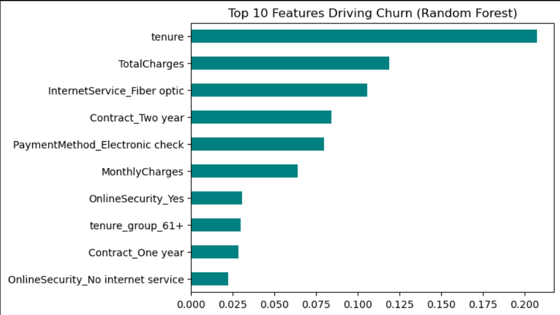
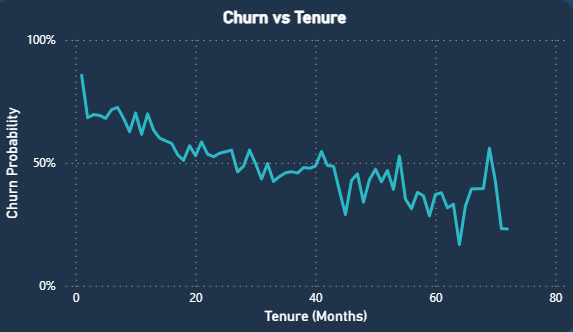
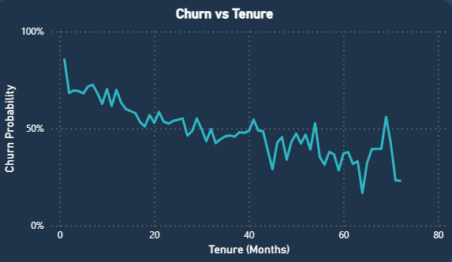
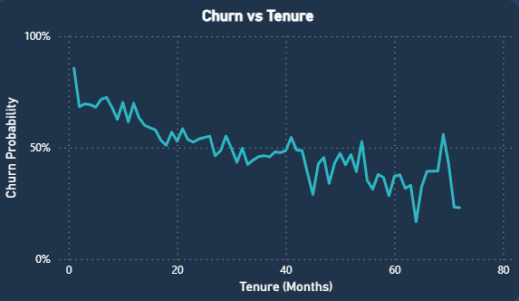

E-Commerce Sales Analytics — SQL Project
Using SQL & Explainable AI to Identify High-Risk Customers and Boost Retention

Concept / Problem
When people think of e-commerce, they think of shopping carts and checkout buttons. I see data. Every click, every payment, every product added to a basket is a story waiting to be told — if you can structure and query it the right way.
For this project, I built a mini data warehouse in PostgreSQL to simulate e-commerce sales. My goal: demonstrate advanced SQL skills that go far beyond SELECT * FROM.
Why E-Commerce?
E-commerce is the perfect playground for analytics. It touches on everything:
- Customers → repeat buyers, churn, loyalty.
- Products → best sellers, inventory analysis, revenue share.
- Payments & Stores → multi-channel performance.
- Time → seasonal trends, growth, and forecasting.
If you can query this, you can query almost anything.
What I Built
Customers who left within the last month- Designed a star schema with one fact table (fact_sales) at the center and five dimension tables (dim_customer, dim_item, dim_store, dim_payment, dim_time).
- Wrote SQL scripts for schema creation, indexes, materialized views, and data validation.
- Developed analytical queries that show revenue trends, top sellers, repeat customer behavior, and store performance.
- Automated reports with stored procedures.
Key SQL Highlights
- Window Functions: ranking top 5 products per month, running totals per customer.
- CTEs: simplifying multi-step logic like repeat customer rates and cohort analysis.
- Data Validation: ensuring referential integrity, checking orphaned keys, and validating calculations.
- Optimization adding indexes and using materialized views for faster reporting.
Even with synthetic data, you can uncover patterns:
These are the exact kinds of insights business leaders expect from an analyst.


 


Business Insights from the Data
- Seasonality: revenue peaks in Q3 and Q4 (holidays drive sales).
- Pareto Principle: ~20% of products generate ~80% of revenue.
- Customer Loyalty: repeat customers form the backbone of revenue.
Takeaway
- This project was about proving one thing: SQL isn’t just about pulling data. It’s about shaping it, validating it, and telling a story with it.
- With this foundation, it’s easy to imagine plugging the same database into Power BI, Tableau, or a Python notebook and turning raw queries into dashboards and forecasts.